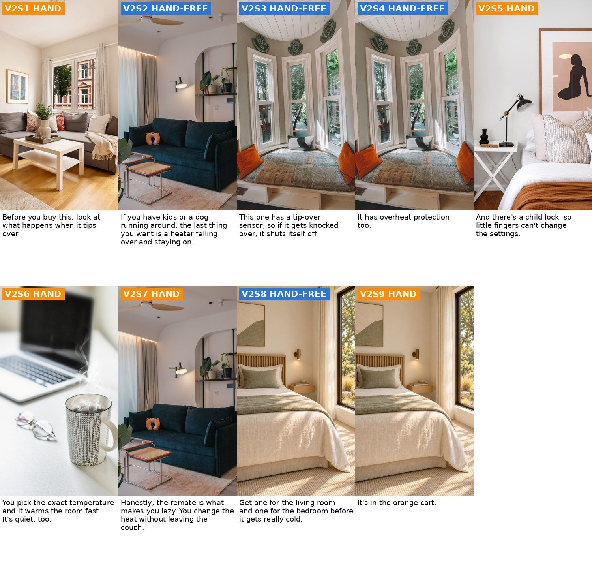
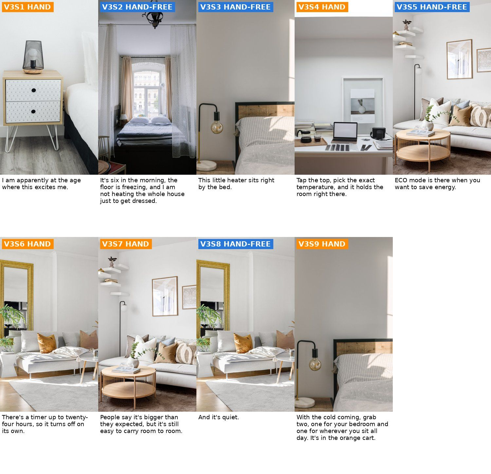

<title>Space Heater Ads Review</title>
<meta name="claude:viewport-fit-sides" content="cover">
<link rel="stylesheet" href="https://fonts.googleapis.com/css2?family=Fraunces:opsz,wght@9..144,600&family=Work+Sans:wght@400;500;600&display=swap">
<style>
/* layout: one reading column, decision block first, media full-width inside it */
:root{--bg:#f6f5f2;--card:#ffffff;--fg:#1d1f22;--muted:#5d6268;--line:#dcdad4;--accent:#c4501b;--hand:#e07a1f;--free:#2f6fc0;--ok:#2d7d46;
--display:"Fraunces",Georgia,serif;--body:"Work Sans",system-ui,sans-serif}
@media (prefers-color-scheme:dark){:root:not([data-theme="light"]){--bg:#17181a;--card:#202225;--fg:#ecebe7;--muted:#a3a7ad;--line:#34363a;--accent:#f0804c;--hand:#f0963f;--free:#6aa3ea;--ok:#5cc07a;color-scheme:dark}}
:root[data-theme="dark"]{--bg:#17181a;--card:#202225;--fg:#ecebe7;--muted:#a3a7ad;--line:#34363a;--accent:#f0804c;--hand:#f0963f;--free:#6aa3ea;--ok:#5cc07a;color-scheme:dark}
body{background:var(--bg);color:var(--fg);font:16px/1.55 var(--body);padding-left:max(16px,env(safe-area-inset-left,0px));padding-right:max(16px,env(safe-area-inset-right,0px));padding-block:24px 48px}
main{max-width:980px;margin:0 auto;display:grid;gap:28px}
h1,h2,h3{font-family:var(--display);font-weight:600;text-wrap:balance;margin:0}
h1{font-size:2rem}h2{font-size:1.45rem}h3{font-size:1.15rem}
p{margin:0}.muted{color:var(--muted)}
.card{background:var(--card);border:1px solid var(--line);border-radius:10px;padding:18px;display:grid;gap:12px;min-width:0}
.decide{border-left:4px solid var(--accent)}
ol,ul{margin:0;padding-left:1.2em;display:grid;gap:6px}
img{display:block;width:100%;height:auto;border-radius:6px;border:1px solid var(--line)}
figure{margin:0;display:grid;gap:6px}figcaption{font-size:.85rem;color:var(--muted)}
.two{display:grid;grid-template-columns:1fr 1fr;gap:14px}@media(max-width:700px){.two{grid-template-columns:1fr}}
.scroll{overflow-x:auto}
table{border-collapse:collapse;width:100%;font-size:.9rem}th,td{text-align:left;vertical-align:top;padding:8px;border-bottom:1px solid var(--line)}
th{font-size:.75rem;letter-spacing:.06em;text-transform:uppercase;color:var(--muted)}
td.num{text-align:right;font-variant-numeric:tabular-nums;white-space:nowrap}td.id{font-weight:600;white-space:nowrap}
.pill{display:inline-block;font-size:.72rem;font-weight:600;letter-spacing:.04em;padding:2px 8px;border-radius:99px;color:#fff;white-space:nowrap}
.pill.h{background:var(--hand)}.pill.f{background:var(--free)}
.tag{font-family:var(--body);font-size:.75rem;font-weight:600;color:var(--accent);margin-left:6px}
blockquote{margin:0;padding:12px 14px;background:var(--bg);border-radius:8px;font-size:1rem}
.vid{display:grid;gap:12px}.ok{color:var(--ok);font-weight:600}
.total td{font-weight:600;border-top:2px solid var(--fg)}
</style>
<main>
<header style="display:grid;gap:6px">
<p class="muted">Grace · Antarctic Star 1500W PTC heater (black, touchscreen) · 2026-10-19 · round 1 (plan)</p>
<h1>Space heater: 3 hands-only videos</h1>
<p class="muted">Nothing paid yet. This page is the plan, the reference-sheet comparison and the free room picks.</p>
</header>

<section class="card decide">
<h2>Your decision</h2>
<ol>
<li><strong>Approve the plan</strong> below: 3 videos (V1, V2, V3), 28 stills, 28 clips, one total. Or pick which videos to make.</li>
<li><strong>Kie top-up:</strong> the balance is <strong>$2.49</strong> and the job needs <strong>$5.80</strong>. Please add at least $3.31 (I'd add $5 for safe room). Kling has 528 credits, enough.</li>
<li><strong>Hands:</strong> Grace's "with bracelet" sheet shows the gold bracelet, the blue birthstone ring <em>and</em> her other rings (crown stack, heart, solitaire). Keep all of them, or only the bracelet + blue birthstone ring? My default: only the bracelet + blue ring.</li>
<li><strong>Variant:</strong> confirm Grace's sample is the black touchscreen one (the listing also sells a knob model and an auto-oscillation model). The scripts claim no oscillation.</li>
</ol>
</section>

<section class="card">
<h2>Reference sheets: yours vs mine</h2>
<figure><figcaption>A: your sheet (AI, 6 angles). B: mine, built from the real listing photos only (free).</figcaption></figure>
<div class="two">
<div><h3>Yours is better at</h3><ul>
<li>Every angle (back, side, bottom, top-down) in clean grey light, no orange glow. The image model gets the shape from all sides.</li>
<li>Proportions are right: height 1.44 x width vs the real 1.47.</li></ul></div>
<div><h3>Mine is better at</h3><ul>
<li>The real top panel: 6 outlined buttons + red power and the "73" display. Yours adds buttons that are not on the real one (an X and a snowflake).</li>
<li>The real remote (yours has none, and two scripts show it).</li>
<li>Nothing invented: the back handle slot, rear vent and bottom switch on yours are not in the listing, so they may be wrong.</li></ul></div>
</div>
<p><strong>Verdict:</strong> for the parts on screen most (front, top panel, remote) mine is more accurate, so you don't need to send one. The listing never shows the back or bottom; when a shot needs those, I'd make the extra angles from my sheet with one Gemini still ($0.09, asked first). For this job I pass both: mine as the real product, yours for shape only.</p>
<figure><figcaption>My sheet at full size.</figcaption></figure>
</section>

<section class="card">
<h2>The 3 videos</h2>
<p class="muted">Grace C voiceover. Hands from the frame edge with grip, no forearm. No on-screen text. Every shot moves (Seedance hand clips, Kling camera moves). Each video has its own 6 rooms, so no footage repeats. Free stock rooms from Pexels and Pixabay (18 picked from 101; licences in rooms/SOURCES.md). Some rooms have warm sun: I'll prompt neutral daylight and grade bright and neutral.</p>
<section class="vid" id="v1"><h3>V1 · One cold room <span class="tag">hook H063</span></h3><p class="muted">Rooms tour: bedroom, desk, couch. Modeled on @myfamilypov (765K) and @shun50111 (115K). About 114 words, ~36 s.</p>
<blockquote>I know I cannot be the only one who has that one room that never warms up. You turn the heat up for the whole house, and that room is still cold. So this little heater just goes wherever you are. Bedroom in the morning, your desk during the day, the couch at night. It&#x27;s fifteen hundred watts and heats up fast. And it&#x27;s quiet. You set the exact temperature right on top or with the remote, and there&#x27;s an ECO mode. The only problem? Whoever gets it first is not giving it back. Grab one for the bedroom and one for your desk before the cold really hits. It&#x27;s in the orange cart.</blockquote><figure><figcaption>Free layout: the room each shot uses (blue = hand-free, orange = hand). The paid stills put the heater and Grace's hand in.</figcaption></figure>
<div class="scroll"><table><thead><tr><th>#</th><th>Type</th><th>Line</th><th>What we see / motion</th></tr></thead><tbody><tr><td class="id">S1</td><td><span class="pill f">HAND-FREE</span></td><td>I know I cannot be the only one who has that one room that never warms up.</td><td class="muted">Wide view of the window nook: the heater stands on the wood floor a little in front of the armchair, sunlight from the window.<br><em>Slow walk-in dolly from the doorway toward the heater, slight handheld feel. Only the camera moves.</em></td></tr><tr><td class="id">S2</td><td><span class="pill h">HAND</span></td><td>You turn the heat up for the whole house, and that room is still cold.</td><td class="muted">A plain white digital wall thermostat on the wall beside the breakfast table; the index finger presses its up arrow. No heater in this shot.<br><em>The finger presses the thermostat up arrow twice, then the hand leaves the frame to the right. The camera holds steady.</em></td></tr><tr><td class="id">S3</td><td><span class="pill h">HAND</span></td><td>So this little heater just goes wherever you are.</td><td class="muted">The hand holds the heater by its top rim from above, fingers curled under the rim, lifting it a few inches off the bedroom floor.<br><em>The hand carries the heater slowly to the right, keeping it upright and at the same distance from the camera; the camera pans with it.</em></td></tr><tr><td class="id">S4</td><td><span class="pill f">HAND-FREE</span></td><td>Bedroom in the morning,</td><td class="muted">The heater stands on the wood floor next to the gold nightstand, morning light.<br><em>Slow low arc around the heater from left to right. Only the camera moves; the room stays still.</em></td></tr><tr><td class="id">S5</td><td><span class="pill h">HAND</span></td><td>your desk during the day,</td><td class="muted">The heater stands on the floor beside the desk and the yellow chair; the hand sets a white coffee mug on the desk, fingers through the handle.<br><em>The hand puts the mug down and slides out of frame; the camera slowly pushes in toward the heater.</em></td></tr><tr><td class="id">S6</td><td><span class="pill f">HAND-FREE</span></td><td>the couch at night.</td><td class="muted">The heater stands on the rug in front of the cream sofa, a knit throw on the sofa arm, soft lamp light plus daylight (still bright).<br><em>Slow sideways truck past the sofa toward the heater. Only the camera moves; the rug and sofa stay still.</em></td></tr><tr><td class="id">S7</td><td><span class="pill h">HAND</span></td><td>It&#x27;s fifteen hundred watts and heats up fast. And it&#x27;s quiet.</td><td class="muted">The heater stands on the breakfast table; both hands, palms open, warm themselves a few inches in front of the mesh, not touching it.<br><em>The hands rub together slowly, then hold open toward the heater again. The heater and the table do not move.</em></td></tr><tr><td class="id">S8</td><td><span class="pill h">HAND</span></td><td>You set the exact temperature right on top or with the remote, and there&#x27;s an ECO mode.</td><td class="muted">Close top-down view of the heater&#x27;s touch panel on the desk; the index fingertip touches the plus button; the white &#x27;73&#x27; display is lit.<br><em>The fingertip taps the plus button twice, the display stays lit, the finger lifts away. Camera fixed, very slight push-in.</em></td></tr><tr><td class="id">S9</td><td><span class="pill f">HAND-FREE</span></td><td>The only problem? Whoever gets it first is not giving it back.</td><td class="muted">Closer view from a low angle: the heater on the rug, the cream sofa and knit throw behind it.<br><em>Slow push-in on the heater. Only the camera moves.</em></td></tr><tr><td class="id">S10</td><td><span class="pill f">HAND-FREE</span></td><td>Grab one for the bedroom and one for your desk before the cold really hits. It&#x27;s in the orange cart.</td><td class="muted">ONE heater on the bedroom floor in the sun patch near the bed, the desk and window behind.<br><em>Slow pull-back and slight rise, ending on a calm wide view. Only the camera moves.</em></td></tr></tbody></table></div></section><section class="vid" id="v2"><h3>V2 · Kids, dogs and tip-over <span class="tag">hook H027</span></h3><p class="muted">Safety buyer guide. Answers the top searches: are space heaters safe, safe for pets. Modeled on @camronnbrown (3.1M). About 118 words, ~37 s.</p>
<blockquote>Before you buy this, look at what happens when it tips over. If you have kids or a dog running around, the last thing you want is a heater falling over and staying on. This one has a tip-over sensor, so if it gets knocked over, it shuts itself off. It has overheat protection too. And there&#x27;s a child lock, so little fingers can&#x27;t change the settings. You pick the exact temperature and it warms the room fast. It&#x27;s quiet, too. Honestly, the remote is what makes you lazy. You change the heat without leaving the couch. Get one for the living room and one for the bedroom before it gets really cold. It&#x27;s in the orange cart.</blockquote><figure><figcaption>Free layout: the room each shot uses (blue = hand-free, orange = hand). The paid stills put the heater and Grace's hand in.</figcaption></figure>
<div class="scroll"><table><thead><tr><th>#</th><th>Type</th><th>Line</th><th>What we see / motion</th></tr></thead><tbody><tr><td class="id">S1</td><td><span class="pill h">HAND</span></td><td>Before you buy this, look at what happens when it tips over.</td><td class="muted">The heater lies on its side on the wooden floor in front of the grey sofa, its top panel dark; the hand grips the top rim, about to stand it up.<br><em>The hand stands the heater upright in one smooth move and lets go; the heater keeps its exact shape. Camera steady, slight push-in.</em></td></tr><tr><td class="id">S2</td><td><span class="pill f">HAND-FREE</span></td><td>If you have kids or a dog running around, the last thing you want is a heater falling over and staying on.</td><td class="muted">Low view across the rug: the heater stands on the floor near the navy sofa, a rope dog toy and a small toy block on the rug in front.<br><em>Low slow dolly along the rug toward the heater. Only the camera moves; the toys and rug stay still.</em></td></tr><tr><td class="id">S3</td><td><span class="pill f">HAND-FREE</span></td><td>This one has a tip-over sensor, so if it gets knocked over, it shuts itself off.</td><td class="muted">The heater lies on its side on the floor below the window seat, its top panel dark (off).<br><em>Slow push-in toward the dark top panel. Only the camera moves; nothing in the room moves.</em></td></tr><tr><td class="id">S4</td><td><span class="pill f">HAND-FREE</span></td><td>It has overheat protection too.</td><td class="muted">The heater stands upright on the floor beside the window seat, bright daylight.<br><em>Slow arc around the heater from right to left. Only the camera moves.</em></td></tr><tr><td class="id">S5</td><td><span class="pill h">HAND</span></td><td>And there&#x27;s a child lock, so little fingers can&#x27;t change the settings.</td><td class="muted">Close top-down view of the heater&#x27;s touch panel beside the white nightstand; the index fingertip presses and holds the small lock button.<br><em>The fingertip holds the lock button, then lifts away. Camera fixed, very slight push-in.</em></td></tr><tr><td class="id">S6</td><td><span class="pill h">HAND</span></td><td>You pick the exact temperature and it warms the room fast. It&#x27;s quiet, too.</td><td class="muted">The heater stands on the white desk next to the laptop and the mug; the fingertip touches the plus button on its top panel.<br><em>The finger taps the plus button once and moves away; the camera drifts slowly right.</em></td></tr><tr><td class="id">S7</td><td><span class="pill h">HAND</span></td><td>Honestly, the remote is what makes you lazy. You change the heat without leaving the couch.</td><td class="muted">Over the sofa arm: the hand holds the small black remote (as in the reference sheet), thumb on a button, the heater on the floor ahead, a little soft.<br><em>The thumb presses the button twice; the hand stays relaxed. Slight handheld drift.</em></td></tr><tr><td class="id">S8</td><td><span class="pill f">HAND-FREE</span></td><td>Get one for the living room and one for the bedroom before it gets really cold.</td><td class="muted">ONE heater on the floor at the foot of the bed by the big window, morning sun.<br><em>Slow walk-in dolly toward the heater. Only the camera moves.</em></td></tr><tr><td class="id">S9</td><td><span class="pill h">HAND</span></td><td>It&#x27;s in the orange cart.</td><td class="muted">Both hands warm themselves a few inches in front of the heater&#x27;s mesh beside the bed, palms open, not touching it.<br><em>The hands rub together once and open toward the heater again. The heater does not move.</em></td></tr></tbody></table></div></section><section class="vid" id="v3"><h3>V3 · 6 a.m. demo <span class="tag">hook H126</span></h3><p class="muted">Identity humor + top-panel demo. Modeled on @drezilla13 (16.5% engagement) and @myfamilypov. About 119 words, ~37 s.</p>
<blockquote>I am apparently at the age where this excites me. It&#x27;s six in the morning, the floor is freezing, and I am not heating the whole house just to get dressed. This little heater sits right by the bed. Tap the top, pick the exact temperature, and it holds the room right there. ECO mode is there when you want to save energy. There&#x27;s a timer up to twenty-four hours, so it turns off on its own. People say it&#x27;s bigger than they expected, but it&#x27;s still easy to carry room to room. And it&#x27;s quiet. With the cold coming, grab two, one for your bedroom and one for wherever you sit all day. It&#x27;s in the orange cart.</blockquote><figure><figcaption>Free layout: the room each shot uses (blue = hand-free, orange = hand). The paid stills put the heater and Grace's hand in.</figcaption></figure>
<div class="scroll"><table><thead><tr><th>#</th><th>Type</th><th>Line</th><th>What we see / motion</th></tr></thead><tbody><tr><td class="id">S1</td><td><span class="pill h">HAND</span></td><td>I am apparently at the age where this excites me.</td><td class="muted">Close top-down view of the heater&#x27;s touch panel next to the white drawer nightstand; the panel is dark (off); the index fingertip touches the red power button.<br><em>The finger taps the red power button, the white &#x27;73&#x27; display lights up, the finger lifts away. Camera fixed, slight push-in.</em></td></tr><tr><td class="id">S2</td><td><span class="pill f">HAND-FREE</span></td><td>It&#x27;s six in the morning, the floor is freezing, and I am not heating the whole house just to get dressed.</td><td class="muted">View through the sheer curtains to the bed; the heater stands on the floor at the side of the bed.<br><em>Slow walk-in through the gap in the curtains toward the heater; the curtains stay still. Only the camera moves.</em></td></tr><tr><td class="id">S3</td><td><span class="pill f">HAND-FREE</span></td><td>This little heater sits right by the bed.</td><td class="muted">Low view along the floor: the heater by the bed, the brass lamp above, a stripe of sun on the wall.<br><em>Low slow slide along the floor toward the heater. Only the camera moves.</em></td></tr><tr><td class="id">S4</td><td><span class="pill h">HAND</span></td><td>Tap the top, pick the exact temperature, and it holds the room right there.</td><td class="muted">The heater stands on the white desk beside the laptop; the fingertip taps the plus button on its top panel, display lit.<br><em>The finger taps the plus button twice and moves away; the camera pushes in slightly.</em></td></tr><tr><td class="id">S5</td><td><span class="pill f">HAND-FREE</span></td><td>ECO mode is there when you want to save energy.</td><td class="muted">The heater stands on the round wooden coffee table in the white living room, sofa behind.<br><em>Slow arc around the heater from left to right. Only the camera moves.</em></td></tr><tr><td class="id">S6</td><td><span class="pill h">HAND</span></td><td>There&#x27;s a timer up to twenty-four hours, so it turns off on its own.</td><td class="muted">The hand holds the small black remote (as in the reference sheet), thumb on the clock button; the heater on the floor by the white sofa ahead, a little soft.<br><em>The thumb presses the button once; slight handheld drift.</em></td></tr><tr><td class="id">S7</td><td><span class="pill h">HAND</span></td><td>People say it&#x27;s bigger than they expected, but it&#x27;s still easy to carry room to room.</td><td class="muted">The hand holds the heater by its top rim from above, fingers curled under the rim, carrying it past the round table.<br><em>The hand carries the heater slowly left to right, upright and at the same distance; the camera follows.</em></td></tr><tr><td class="id">S8</td><td><span class="pill f">HAND-FREE</span></td><td>And it&#x27;s quiet.</td><td class="muted">The heater stands on the light rug in front of the white sofa, the gold mirror and plants behind.<br><em>Slow push-in from a low angle. Only the camera moves.</em></td></tr><tr><td class="id">S9</td><td><span class="pill h">HAND</span></td><td>With the cold coming, grab two, one for your bedroom and one for wherever you sit all day. It&#x27;s in the orange cart.</td><td class="muted">ONE heater on the floor by the bed; both hands warm themselves a few inches in front of the mesh, palms open, not touching it.<br><em>The hands rub together slowly and open toward the heater again. The heater does not move.</em></td></tr></tbody></table></div></section>
</section>

<section class="card">
<h2>Cost and time</h2>
<div class="scroll"><table><thead><tr><th>Item</th><th>Count</th><th>Each</th><th>Total</th></tr></thead><tbody>
<tr><td>Stills, Gemini 3 Pro Image on Kie (product from my sheet, no pasted label)</td><td class="num">28</td><td class="num">$0.09</td><td class="num">$2.52</td></tr>
<tr><td>Hand clips, Seedance 2.0 Mini reference mode, 5 s</td><td class="num">15</td><td class="num">$0.205</td><td class="num">$3.075</td></tr>
<tr><td>One Seedance hand-free clip to test against Kling (your rule)</td><td class="num">1</td><td class="num">$0.205</td><td class="num">$0.205</td></tr>
<tr class="total"><td>Kie total</td><td></td><td></td><td class="num">$5.80</td></tr>
<tr><td>Hand-free clips, Kling 3.0 on your account (credits checked before and after)</td><td class="num">13</td><td class="num">~32 cr</td><td class="num">~416 cr</td></tr>
<tr><td>Grace C voiceover, ElevenLabs</td><td class="num">3</td><td></td><td class="num">1,814 chars</td></tr>
</tbody></table></div>
<p><strong>Order:</strong> ONE test still first (V1S3, the hand carrying the heater, the riskiest), checked at full size. Then all stills as a storyboard for you <em>before any video spend</em>. Then the riskiest clip + the Kling vs Seedance test, then the batch, then cuts with QC, the compare check and the AI finish.</p>
<p><strong>Time after your OK:</strong> stills ~25 min, test clips ~15 min, batch ~35 min, 3 cuts + QC ~60 min. About 2.5 hours, with 2 review stops for you.</p>
</section>

<section class="card">
<h2>Checks done</h2>
<ul>
<li><span class="ok">Script gate OK</span>: audience research (1,226 search phrases, 257 TikTok comments), coach shop/tag/viral board, 6 winner videos broken down, product facts, hooks from the library word for word (H063, H027, H126), Humanizer, reading grade 2.9 / 4.0 / 3.7.</li>
<li>Reddit was tested and blocks this cloud server (403), so the real quotes come from the product's reviews and TikTok comments.</li>
<li><strong>Listing conflicts</strong> (flagged, not used): temperature range 40-86°F in the title vs 60-87°F and 41-95°F on the images; 36 dB vs 45 dB; "5 heat modes" vs 3 shown. The scripts say "the exact temperature", "quiet" and "ECO mode" with no numbers.</li>
<li>V3's second line ("I am not heating the whole house just to get dressed") is Grace's opinion; if it isn't true for her, the swap is "Who else is cold at six in the morning?"</li>
<li>Safety in the shots: the heater sits on the floor or a hard surface, nothing touching it, never in a bathroom by water. No fake orange heat streaks.</li>
</ul>
</section>
</main>
